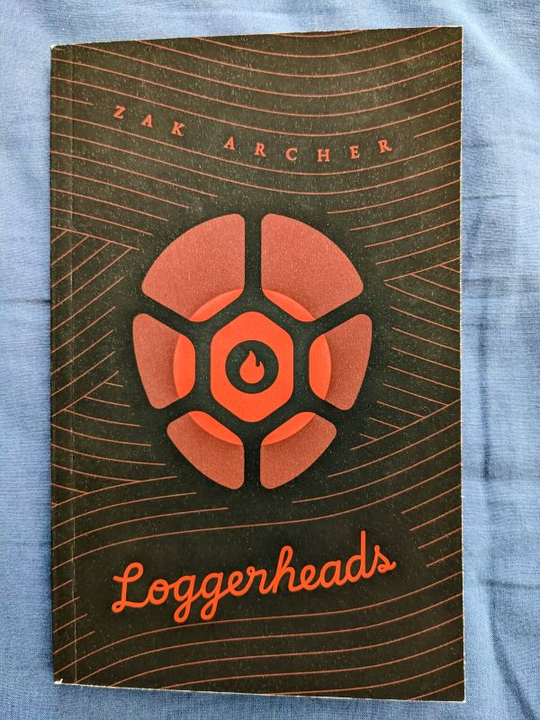
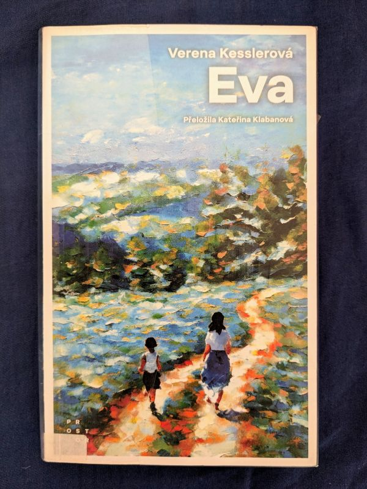
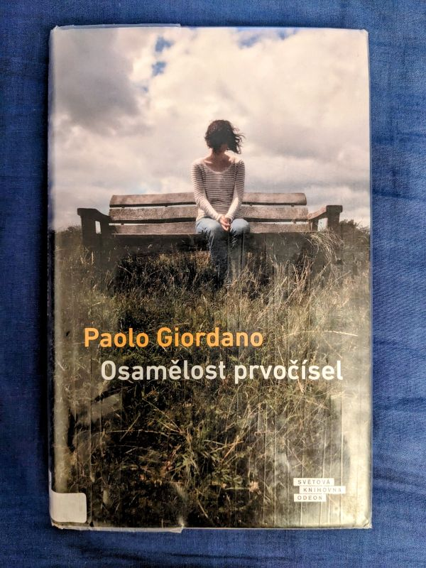
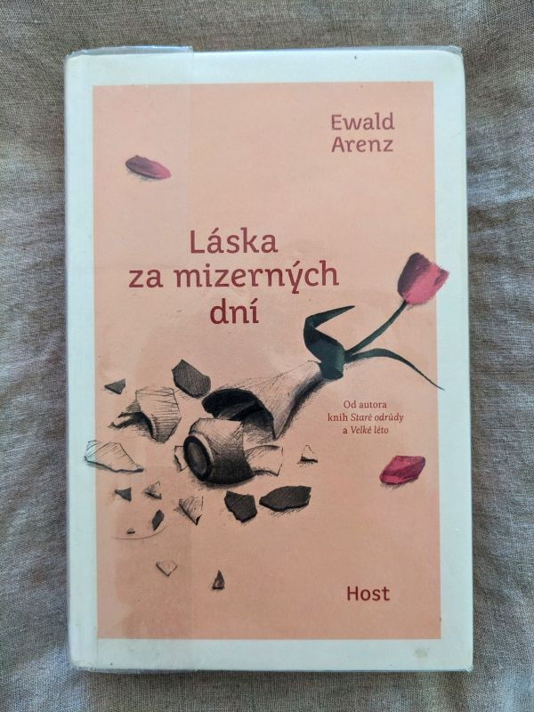
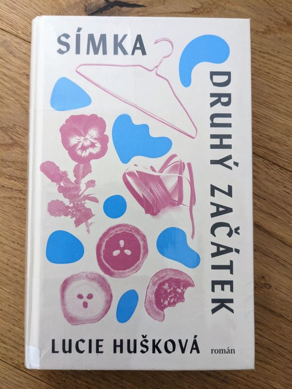
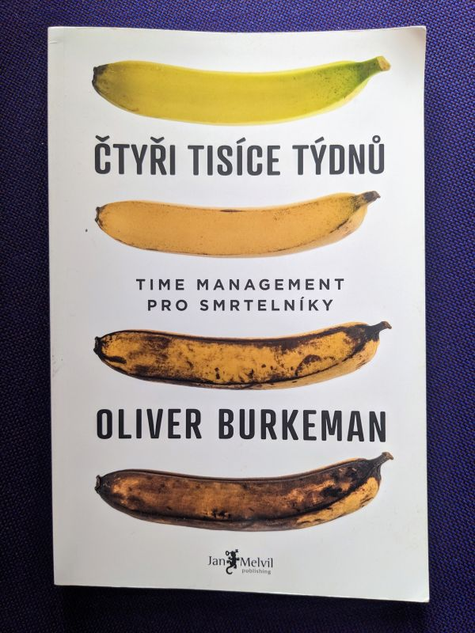
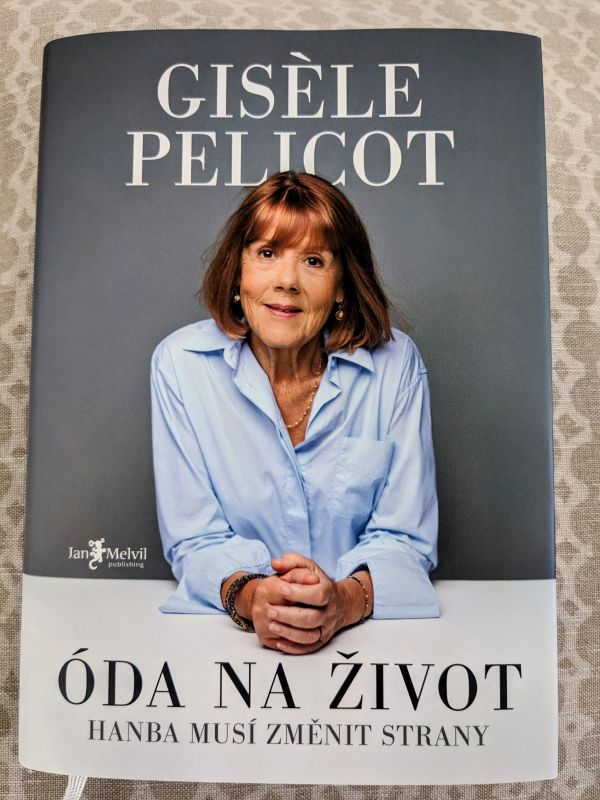
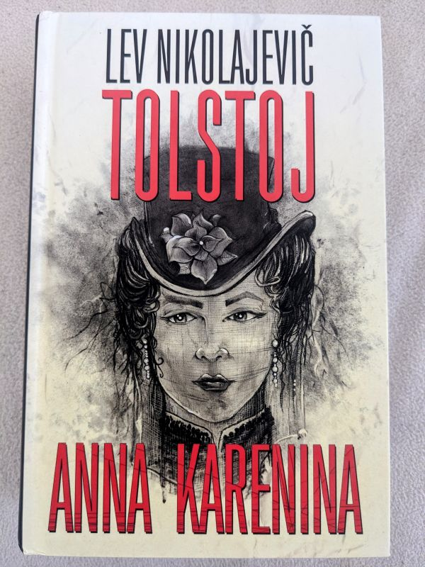

Přináším vám takhle při zamračeném pátku zase pár literárních tipů, třeba přijdou někomu vhod :-)
Zak Archer - Loggerheads
Mám ráda knížky s příběhem a tato se ke mně dostala vskutku originální cestou. Žánek mi při našem lednovém setkání na Ramzové vyprávěl o kamarádovi, který napsal knihu, a zda bych neměla chuť si ji přečíst. Takové nabídce já samozřejmě nikdy neřeknu ne :-D K mému překvapení mi jen pár dnů po návratu z hor zmiňovanou knížku přivezl kurýr (za což Žánkovi ještě jednou děkuju). Rozsahem i formátem (jako dělaným na cesty vlakem do práce) se jedná o útlou novelu. Manželský pár Carey a Jess během jedné bouřlivé noci havarují s autem. Bouří však toho času prochází i jejich vztah. Na několika málo stranách autor rozehrává drama, které má chvílemi možná až lehce hororový nádech (nejspíš ve mně tento dojem podpořily i poněkud ponuré ilustrace, které novelu doprovázejí). Navzdory slibnému úvodu mi však přijde, že vyprávění postupně ztrácí dech a vyústění je až příliš prvoplánové. Chápu, že ne každý je milovníkem hororu, ale mě by osobně vůbec nezklamalo, kdyby se mrazivou atmosféru doprovázející stoupání ústřední dvojice na vrchol majáku, autorovi podařilo udržet ještě o něco déle a možná i čtenáře překvapit nějakým nečekaným twistem :-) Body navíc dávám za originální obálku a vsadím se, že vám dlouho bude vrtat hlavou, co je to na ní vlastně vyobrazené :-)

Verena Kesslerová - Eva
Přiznám se, že tím, jak jsem za poslední dobu knih s tematikou (ne)mateřství přečetla tolik, mi tato s odstupem času už trochu splývá. Byla by ale chyba ji kvůli tomu zavrhnout, protože přináší hned několik náhledů na situace, kterým čelí současné ženy. Eva, která propůjčila celé knize jméno, je učitelkou otevřeně hovořící o tom, že vzhledem ke klimatické krizi není rozumné přivádět na svět další děti. Za tento svůj „kontroverzní“ světonázor však sklízí nepochopení a kritiku. Jako protiváha k Evě je tu novinářka Mona, která se s partnerem o dítě snaží, ale nedaří se to, a její sestra Sina, která je (byť několikanásobná matka) všechno, jen ne šťastná. Mozaiku příběhů uzavírá příběh Sininy sousedky, která o své jediné dítě přijde. Pokud máte obavy, že kniha by vás mohla závažností svých témat semlít, musím přiznat, že je poměrně stručná a (možná i v rámci pudu sebezáchovy) tak trochu klouže po povrchu. Rozhodně však hraje na citlivé struny, které rezonují společností, a stojí za vaši pozornost i přečtení.

Paolo Giordano - Osamělost prvočísel
Velmi zajímavá kniha, která se však vůbec nečte lehce. Motiv, který se jí vine od začátku až do konce, je jedno rozhodnutí a jeho důsledky, které vás provázejí po celý zbytek života. Ta dvě osaměla prvočísla, to jsou Alice a Mattia. Každý si v sobě od dětství nese jiné trauma a každý z nich má jiný způsob, jakým se s ním vyrovnat. Jejich „jinakost“ je v průběhu dospívání svede dohromady, nečeká vás ale love story v pravém slova smyslu, spíš hodně bolavé čtení o dospívání, osamělosti, hledání a nepochopení. Moc bych přála oběma „hrdinům“ lepší závěr jejich příběhu, takhle na mě celé to vyústění působilo příliš beznadějně.

Ewald Arenz – Láska za mizerných dní
Jediný a naprosto famózní román Velké léto, o kterém jsem vám zde básnila tak dva roky zpátky, katapultoval Ewalda Arenze mezi autory, jejichž další knihy rozhodně nesmí uniknout mé pozornosti. Hned na úvod předesílám, že Láska za mizerných dní kvalit Velkého léta v mých očích zkrátka nedosahuje. Příběh – střídavě vyprávěný ústředním mileneckým párem Clarou a Eliasem – přináší těžká témata (věkový rozdíl ve vztahu, péče o rodiče s Alzheimerem, vážná nemoc), která jsou ale vyprávěna vlídným jazykem a je to celkově takové milé čtení, které vás spíš pohladí po duši než uvrhne do deprese. Začátek románu mě docela pohltil, zhruba v polovině však bohužel kniha trochu ztrácí tempo a začíná to celé působit strašně uměle a nepravděpodobně, což je škoda. Pokud máte chuť na trochu červené knihovny mezi všemi těmi detektivkami, válečnou literaturou a rodinnými dramaty, klidně po Lásce za mizerných dní sáhněte. Jinak mi ale přijde, že je celá řada lepších knih, které čekají ve frontě, až si na ně uděláte čas a na tento román ho plýtvat nemusíte :-)

Lucie Hušková – Símka: Druhý začátek
Na pokračování příběhu Símky od Lucie Huškové jsem se také už dlouho těšila a tolik jsem jí přála, aby ji v druhé knize konečně čekal nějaký happy end! Jestli se ho Símka dočká či ne nebudu vyzrazovat, každopádně vás můžu ubezpečit, že se opět jedná o velice čtivý román, jehož samozřejmostí je svižný děj a krátké kapitoly, které vás budou vybízet do čtení, takže se pravděpodobně stane, že Símku zhltnete na posezení. Smím snad ještě prozradit, že z vývoje Símčina příběhu, stejně jako z toho, jak se nakonec „vyloupnou“ některé z postav z předchozí knihy, jsem nakonec moc šťastná nebyla a další pokračování už si asi neprosím. Ale na to, čím nás autorka ještě v budoucnu překvapí, se těším velmi :-)

Oliver Burkeman – Čtyři tisíce týdnů
Ve světě, kde se jede na výkon a čas, který nestrávíte produktivně, je promrhaný, může tahle kniha působit jako zjevení. Pokud je pro vás time management už pomalu sprosté slovo, bude se vám líbit. Jestli ovšem hledáte návod, jak konečně v životě začít stíhat všechno to důležité, ten tu nenajdete. Oliver Burkeman vás už po prvních stránkách přesvědčí, že to není dost dobře možné a že vlastně ani není moudré o to usilovat. Možná to nezní vašim uším jako objevná myšlenka, ale uvést ji do praxe je jedna z největších výzev, jaké v dnešní době čelíme. Spousta situací, o kterých autor píše, vám bude připadat důvěrně známá. Ani si nemyslím, že je nutné Čtyři tisíce týdnů přečíst naráz – je to spíš takový ten text, ke kterému se můžete vracet ve chvílích, kdy budete mít pocit, že vám to zase všechno padá na hlavu a nic nestíháte, nebo ji předčítat nahlas svým blízkým, kteří zrovna v kolečku běhají své křeččí závody. Ne vždy se to však úplně setká s kýženým ohlasem – vyzkoušeno za vás :-))

Gisèle Pelicot – Óda na život
Nevím, zda je třeba ke jménu Gisèle Pelicot ještě vůbec něco dodávat – asi s každým otřásl její médii propíraný životní příběh, kdy byla po několik dlouhých let pod vlivem léků, které jí podával vlastní manžel, znásilňována desítkami mužů. Její memoár Óda na život však vypráví mnohem víc než jen popis této šokující soudní kauzy. Gisèle se v knize vrací do svého dětství, mládí, vzpomíná na seznámení s dnes již bývalým manželem i první roky jejich vztahu a hledá v nich odpovědi na otázku, jak je možné žít tolik let ve zdánlivě spokojeném manželství a nevidět vodítka, že je něco fatálně špatně. Postupně vyplouvá na povrch, že i sám predátor byl obětí násilnického otce, což samozřejmě jeho vinu žádným způsobem neumenšuje. Po dočtení si možná budete klást otázku, jak je možné, že žena, se kterou se život opravdu nemazlil, v sobě nemá ani trochu hořkosti a hlavně se nestaví do role oběti, ale s ohromnou vnitřní silou čelí mediálnímu tlaku i soudům veřejnosti. V Ódě na život jde doslova s kůží na trh a vychází z ní v mých očích ještě silnější a s životem srovnanější. Odpověď na to nemám, ale je jisté, že v tom může být Gisèle Pelicot ohromnou inspirací pro každého z nás, ať už si s sebou neseme jakýkoliv osud.

Lev Nikolajevič Tolstoj - Anna Karenina
Tuhle klasiku jste tu asi nečekali, popravdě ani já, protože v záplavě stále nových a nových knížek, které vycházejí, se snadno zapomene na díla, o kterých jste naposledy slyšeli ještě ve školních lavicích 😊 Anna Karenina je můj úlovek z ReKnih a byť se nejedná úplně o knihu do kabelky (a v MHD já toho přečtu nejvíc, takže byla hned od začátku odkázaná na chvilky před spaním) a měla jsem obavy, jak se mi podaří tím bezmála 1000 stránkovým románem prokousat, je to dílko docela čtivé. Problém jsem měla jen s tím množstvím postav, které se na vás na začátku navalí, všichni se jmenují Alexej nebo nějak podobně a vy se ztrácíte v tom, kdo je kdo. Brzy se naštěstí rozjede děj, Anna podlehne Vronskému a už se to čte samo (i díky krátkým kapitolám to hezky odsýpá). Musím ale přiznat, že víc než dějová linka Anny a Vronského mě bavila ta o Levinovi a Kitty. (Kdybych Annu Kareninu četla v maturitním ročníku, bylo by to zcela jistě naopak 8-) Po odhalení Anniny nevěry mě ta její postava začala tak nějak otravovat, stala se z ní hrozná tragédka. Na linii Levinova příběhu mě naopak bavilo jeho zasazení do kontextu doby, politické a sociální situace – čtenář se díky tomu mnohem lépe zorientuje v době, kdy se děj románu odehrává.
